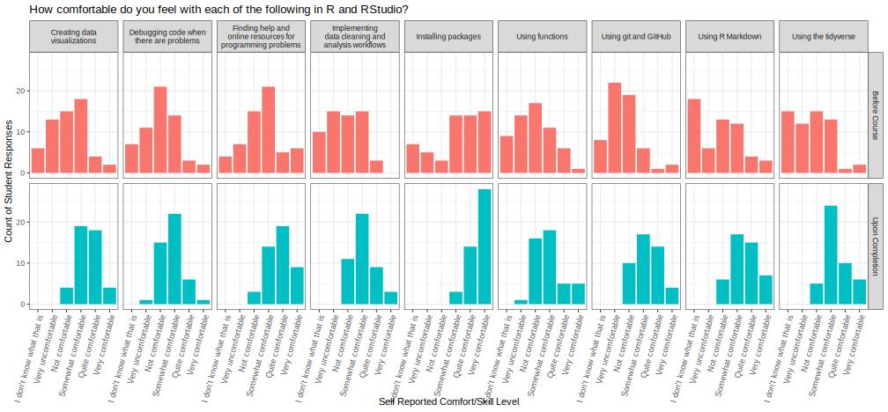
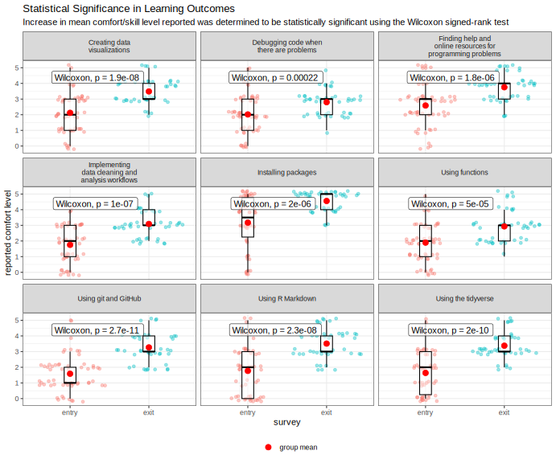

The first offering of ID529 Data Management and Analytic Workflows in R at Harvard

Teaching ID529 was such a blast, and I’m so happy with how the course turned out. The students have repeatedly communicated that they learned an extraordinary amount, that the skills they learned will be tools and frameworks of thinking they take forward with them as they continue their research and scholarship, and that they appreciated the down-to-earth, fun, affirmative atmosphere we fostered in our classroom.
In Fall 2022, my colleague, mentor, and supervisor Jarvis Chen asked me if I wanted to teach a course about R for the Population Health Science (PHS) PhD program at Harvard. This request came about because the PHS students had expressed in prior years’ surveys an uncomfortability with programming and that their coursework gradually transitioned from not expecting them to be able to program to suddenly expecting them to be able to program with no instruction on the topic. Based on the lectures on Exploratory Data Visualization for Longitudinal Data Analysis, my work founding, lecturing for and coordinating the R User Group at the Harvard Data Science Initiative, and lecturing at the Public Health Disparities Geocoding Project 2.0 Jarvis thought I was a good choice for an instructor and the right person to design the course curriculum.
We formed an absolutely fantastic teaching team between Jarvis, myself, Dean Marengi, and Amanda Hernandez with everyone contributing to create what I think became a fantastic course. Our course website is online here https://id529.github.io/, so a lot of the logistical details and overview material (including our slides and lecture recordings) is best accessed on there, but I thought I’d take some space here to talk about what I thought really made this course different.
{kind=link}
Course Tracks
Firstly, I think we were completely committed to creating an affirmative environment for the students. We emphasized for our students that there were different “tracks” through which one could take this whirlwind of a two-week short-course, and those were
- Beginner/Novice
- Data Visualization
- Data Cleaning/Management and Working with Codebooks
- Programming and Software Engineering
- Other Niche Topics in R
We were emphatic about communicating that we just wanted to see that students challenged themselves to grow through the in-class work and homework, and did as much as we possibly could to take the pressure and anxiety of grades off the table. We were sure to provide constructive and encouraging feedback on their work, but for the most part as long as we saw that students were making a good-faith effort to learn new skills we were eager to give them As on their work and in the class so they could focus on learning, not worrying about grades.
Affirmations
Several days throughout the course, we took time out of class to go over these affirmations designed to help combat imposter syndrome. One student told me that this was a refreshing change from the “sink-or-swim” Python programming classes they had encountered elsewhere, and they had incorporated these statements into their morning meditation practice — which I consider an absolute win!
{kind=link}
Memes
Throughout the class, we were sure to use a lot of wholesome memes — and I suppose that might seem kind of silly at first glance, but I think it helped create a fun, vibrant atmosphere where tensions were lowered and people felt like it was OK to make a mistake!
{kind=link}
Real-Time Feedback Surveys
Another aspect in which we were different from the usual class was our goal from the outset to correct and gauge how the course was going as we went along. We circulated surveys with the students on the first day and then again on the third day that allowed us to check what the students were most eager to get out of the class, how they thought it was going, and whether they thought we should change the pacing at all. Most students thought that the pacing was a little fast, so we worked to slow down the curriculum for the remainder of the course, adding more time for discussion and making sure we focused on the fundamentals and essentials so that our students would get the most bang-for-their-buck (their buck being the tuition they pay Harvard and the opportunity cost associated with the time they spent in our classroom as opposed to anywhere else in the world they could be enjoying themselves).
Though we did have some standard run-of-the-mill Qualtrics surveys we gave to the students, we also had some interactive real-time Menti surveys that both the students and instructors really enjoyed.
{kind=link}
{kind=link}
I was really surprised at just how appreciative the students were. When we were honest about asking them to bear with us as we were teaching the course for the first time, some students said they felt privileged to be part of the inaugural class. Similarly, as a result of asking students to fill out surveys to gauge how the students were feeling, the students expressed appreciation that we were willing to change the pacing of our course to meet them where they’re at.
GitHub Classroom
One of our major goals was to teach the students how to use GitHub and get them actively using it during the timeframe of the course — so to us, it made sense to use GitHub Classroom to share assignments as template repositories that students could build off of. That said, it was a very new process for those of us on the teaching team and we weren’t entirely certain how it would go. That said, I think it went fantastically! It was absolutely incredible to see how willing the students were to learn how to use GitHub, many often pushing themselves to set things up the “right way” (with SSH-key authentication) and learning Git commands even though there are buttons for most basic functions available in RStudio. It was really fantastic to see students who had never even thought about using GitHub going all the way from setting up accounts, creating repositories, and thoughtfully using markdown to document and supplement the code in their homework repositories.
{kind=link}
Google Docs
One of the things that worked incredibly well for facilitating class discussions was sharing a Google Doc that students could ask questions in anonymously and the instructional staff or lecturer would respond as soon as they could during class. This made it so students didn’t have to feel shy about if their questions would make them look foolish or silly or anything like that, but instead to ask anything that they thought might be beneficial for them to hear about. Students communicated to us in their feedback that they really appreciated this mode of Q&A!
{kind=link}
Hodu
In an effort to keep things light and upbeat, we incorporated my charming dog Hodu as much as possible, which students cheered and celebrated to a degree that made me so happy we had thought to include him.

We even brought Hodu to school to let the students enjoy being in his presence for a while. I think the students who stuck around that Friday evening really enjoyed meeting him and his brother Sabre who my wife and I were also petsitting at the time.
{kind=link}
Some students even incorporated Hodu into their final projects in creative ways. One of my favorites was one student’s innovation on the Hodu Tip concept — when describing something a programmer shouldn’t do, they said that be more of a “No-du Tip”!
{kind=link}
Fun Activities
We wanted to make sure that we didn’t have the students just sitting for four hours every day, so we were sure to break things up with stretch-breaks and occasionally structured activities. One of my favorite activities we came up with was a QR-code based activity where students scanned QR codes in the hallway that linked them to datasets that contained “secret messages.” Once they got their datasets and instructions, they had to figure out how to uncover the secret message using ggplot2 and possibly some mathematical or programmatic transformations of the data.
{kind=link}
{kind=link}
The second of these messages comes from this famous tidyverse.com blogpost by Jenny Bryan: https://www.tidyverse.org/blog/2017/12/workflow-vs-script/
One activity that I particularly enjoyed was the “Bonus Extra Credit” on their first assignment with ggplot2 where we encouraged them to “Fancy Your Figure”. We did this because we believe that when you channel your creative instincts and focus on bending ggplot2 to your will, you end up learning a lot along the way including aspects of ggplot2 that you might not otherwise learn so soon and which may prove useful to you.
One student’s submission was particularly fantastic, and I have to give them props for committing so hard to their concept.
{kind=link}
Another activity that I think had everybody enthralled was a Shiny-app simulated Rock Paper Scissors Lizard Spock tournament in which we gave away a copy of the R for Data Science book by Hadley Wickham and Garrett Grolemund!
The code behind the app are available on my GitHub here: https://github.com/ctesta01/RPSLS/ and the app is online here: https://ctesta.shinyapps.io/RPSLS/
Course Outcomes
Besides the students performing spectacularly and giving stellar final presentations, we also collected measurable data through our first-day and final survey on how comfortable students felt with each of the key skills the course aimed to teach.

(For the above figure, you might want to Right Click -> Open Image In New Tab to see it full screen).
Not only is there a visible shift in students’ reported comfort level across these different skills, but this shift turns out to be statistically significant in every case. I’m so proud of how much our students learned!

Lastly, we asked students how likely they are to recommend the course to a friend, and the students who responded to our survey were overwhelmingly likely to encourage their friends to take the class, with almost 90% saying they would strongly recommend the class.